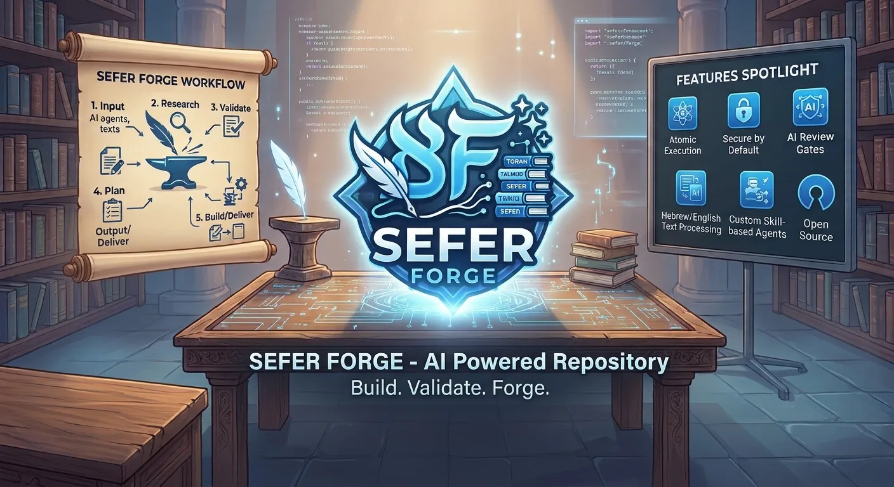
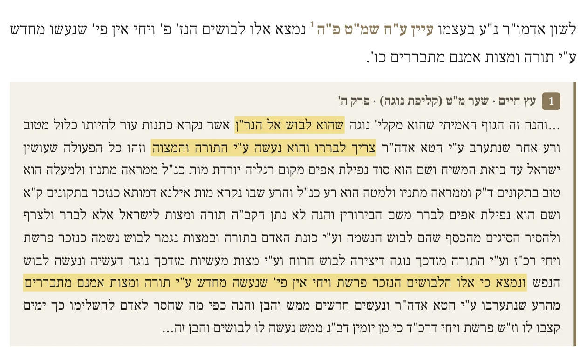
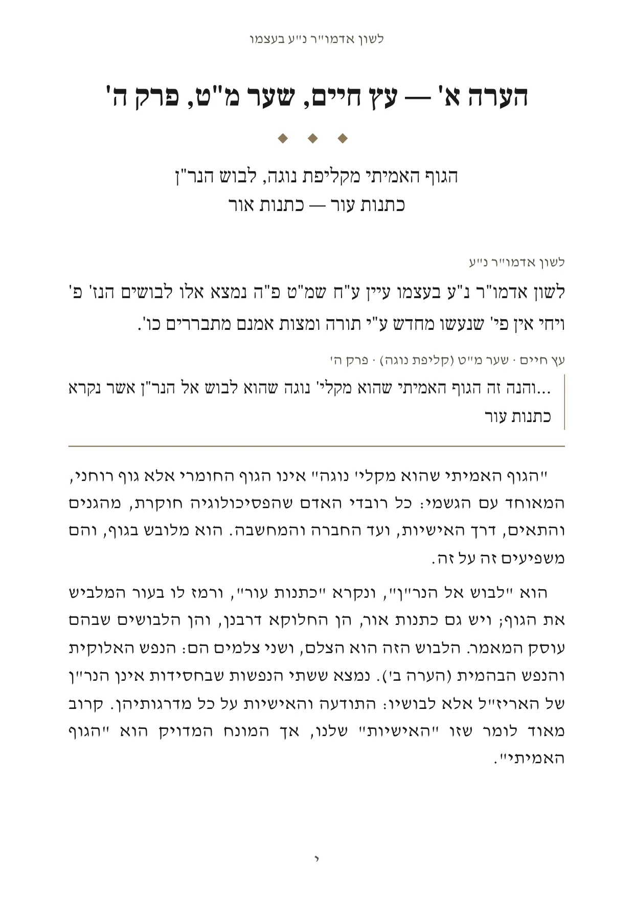
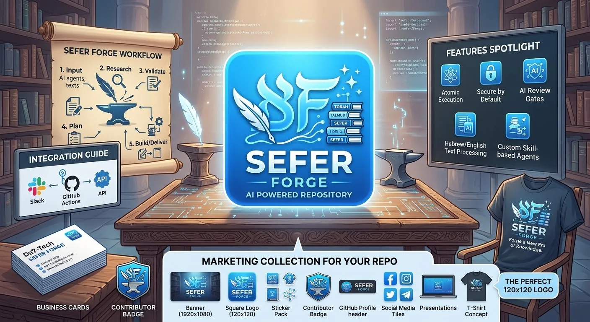

Sefer Forge
An open-source workshop that turns Hebrew sefarim, and the explanations recorded over them, into books, booklets and narrated readings. An AI agent does the work, step by step; the repository's rules, checks and proofs keep it faithful to the text and to what was said.
What it makes
Books
A sefer and a recorded explanation become a print-ready book: the text on top of each page, its explanation below.
Pamphlets
Any lesson printed on its own as an A5 pamphlet, or a whole series behind a contents page.
Reading packs
Before a lesson is recorded, every source the text cites is set out under its citation, the words it refers to highlighted.
Booklets
The stories of Shivchei HaBesht, in Hebrew, English and French, printed as themed booklets.
Narrated videos
The stories, read aloud, published as videos on the project's own YouTube channel.
The process
From a recorded lesson to a printed page
A teacher learns a text and explains it aloud. Sefer Forge turns the recording into a publication in which every page carries a passage of the original on top and the teacher's explanation of it below: faithful to what was said, and written to be read.
-
Take in the text
Photograph the pages of a sefer, or paste the text from a digital edition. The agent reads each photo in strips at full resolution, counts the lines and reads everything a second time; what it cannot read is flagged, never guessed.
ocr.md -
Set out its sources
Before recording, a reading pack sets every source the text cites under its citation: the passage from Etz Chaim or Pri Etz Chaim with the lines before and after, the words it refers to highlighted, quoted exactly from the texts kept in the repository.
references.yamlreading pack (PDF)
From the sample's reading pack: the text, citation 1, and the passage it points to. -
Record the explanation
The teacher reads the text aloud and explains it, in Hebrew, one note at a time, on a phone. Photos and recordings stay on the home machine: they are never committed or uploaded.
voicenotes/ -
Transcribe, locally
ivrit.ai's Hebrew Whisper (large-v3) runs on the home GPU, in about 0.9× the recording's length, saving as it goes so a crash loses nothing. A shared glossary corrects the mis-hearings that recur.
.raw.txt.timed.txtwhisper-fixes.yaml -
Match and clean
The transcript is matched against the printed words the speaker read aloud, which corrects both. It is cleaned only where the repository holds evidence (the text, the glossary, a verse being quoted). A doubtful word keeps its time so the author can listen again, and a report lists every word that changed.
ocr-match.mdcommentary.mdreview.md -
Pair text and explanation
A short plan cuts the text where its explanation begins, and the page is built from the plan: the passage on top, the explanation below.
section-plan.yamlsection.md -
Make it read as writing
Three passes, each kept as a list of changes that can be undone: readability (garbled words), style (spoken Hebrew made written) and teaching (the lesson rewritten as a commentary on the text, about half the length). The faithful transcript stays beside them, and the quoted readings never change.
edits:style:teaching:teaching-notes.md -
Print, proof, accept
A session prints as an A5 pamphlet; discourses gather into chapters and books (Word, through pandoc). Every PDF is proofed for fonts, colours, margins, stray markup, stranded headings and page numbers, then reviewed page by page, before it reaches the author for acceptance.
pamphlet (PDF)book (DOCX)proof-pdf.py
Automation
An AI agent does the work. The repository keeps it honest.
The work is done by Claude Code acting as an agent. The author names a goal (“new session”, “ingest session 3”, “teaching pass”, “proof the pamphlet”) and the agent carries out every step. It reads the photos, runs the scripts, writes the files, checks its own work, rebuilds, and reports what needs the author. Everything it knows lives in the repository, not in a chat, so every session starts from the same rules.
CLAUDE.md
What may never be edited, the file formats, and which skill answers which request.
prompts/
The full steps for each kind of session, the transcript review rules, and the readability, style and teaching passes.
.claude/skills/
Sixteen skills, one per workflow: new-session,
ocr-session, ingest-session,
references-pack, teaching-pass,
proof-pdf, build-book…
scripts/
The deterministic work (transcription, OCR strips, matching, building, printing, status), so the agent runs tools instead of improvising.
.claude/settings.json
After every edit of a session file a hook runs
check-session.py; an error goes straight back to the agent
before it moves on.
proof-pdf.py
Every PDF is held to docs/print-standard.md, then reviewed
spread by spread, before anyone is asked to accept it.
You say, the agent does
| “new session” + files | makes the session, starts Whisper in the background, begins the OCR |
|---|---|
| “references” | sets out every cited source as a reading pack |
| “ingest session” | OCR, match, clean, pair, the three passes, the pamphlet and its proof |
| “status” | where every session stands, and its next step |
| “assemble discourse”, “build book” | joins the sessions, places the chapter, renders the book |
| “grow the glossary” | proposes Whisper fixes from corrections made again and again |
Evidence, not invention
sessions/002/review.md (from the sample)
Whisper 887 words · cleaned 883 · replaced 32 · added 0
שעמם ט← שער מ"טכותנות← כתנותויבשם כותנות← וילבשם כתנות
Every word of the cleaned transcript traces back to what Whisper heard. A word added without a rule is an error, and the check reports it.
Where the author decides
- accepting a PDF;
- replacing a source of truth (a raw transcript, a finished OCR);
- overwriting hand-edited text;
- a change that would alter the argument;
- anything that leaves the machine or cannot be undone: merging, deleting, publishing.
Built to resume
Long steps run in the background. Every workflow picks up where it
stopped, after a crash, a restart or a week away:
session-status.py names each session's next step. Each
piece of work goes on a branch and reaches main through a
pull request.
From agentic to autonomous
- Assistedthe author, step by step
- Agentic sessionsname the goal; the agent runs the workflowtoday
- Event-drivena new recording starts its own session
- Scheduleda recurring run advances every mechanical step
- Autonomous, with gatesone pull request per piece; the author reviews and accepts
Sample project
לשון אדמו"ר נ"ע בעצמו
לבושי הנשמה · מקורותיו בעץ חיים · ביאור
The garments of the soul: a gloss, its sources in Etz Chaim, and an explanation
The Zohar teaches that by keeping Torah and mitzvot a person makes garments for the soul, in which it enjoys the radiance of the Shechinah in the World to Come. It sounds as though Torah and mitzvot are themselves the garments. A short gloss, in the Alter Rebbe's own words, asks what the garments really are, citing Etz Chaim and Pri Etz Chaim at every turn: they are not made anew by Torah and mitzvot, but refined and repaired.
The project went through the whole process: the text from a digital edition, a reading pack of its citations, four recordings, and for each note paired pages and a teaching pass. It grows one note (הערה) at a time, one for each box of the reading pack.
- Text
- digital edition, chabadlibrary.org
- Sources set out
- 26 citations of Etz Chaim and Pri Etz Chaim; 9 more works listed
- Recordings
- 4, about 20 minutes, in Hebrew
- Sessions
- 3: the introduction, note א, note ב
- Pamphlet
- A5, 18 pages
- Reading pack
- A4, 13 pages
Turn the pages
Every page as printed. Click a page to see it at full size; use the arrows, the thumbnails or your keyboard to turn.
Anatomy of a page

1 2 3 4 5- Running head and Hebrew page numbers. The title on every page; א, ב, ג at the foot.
- The note's heading. Its letter, the source it explains (עץ חיים, שער מ"ט, פרק ה') and its subject.
- The text. The stretch of the gloss this page explains, labelled לשון אדמו"ר נ"ע.
- The source. The Etz Chaim passage the gloss cites, set apart by a rule, with its gate and chapter.
- The explanation. The recorded explanation, cleaned, made written and condensed by the teaching pass. Each paragraph opens with the words it explains.
Behind the pages: the trail of note א
Every step leaves a file in the repository, so any sentence on the page can be traced back to the recording.
references.yamlthe reading pack's plan: each citation and its passage
ocr.mdthe note's stretch of the text, and its Etz Chaim passage
voicenotes/Whisper's transcript, plain and timed (the audio stays home)
ocr-match.mdwhich printed words were read aloud, and when
commentary.mdthe faithful transcript, with its passes listed above it
review.mdevery word changed against Whisper
section-plan.yamlwhere the text is cut, and what each explanation covers
teaching-notes.mdthe note understood in writing before it is rewritten
section.teaching.mdthe page as it prints
How Sefer Forge uses YouTube and Google Drive
Sefer Forge includes a publishing tool used only by the project's owner. Signed in with the owner's own Google account, it:
- uploads the project's narrated videos to the owner's YouTube channel, with their titles, descriptions, chapters and language, as private videos;
- adds each video to a playlist for its language on that channel;
- reads the channel's own list of uploads, to keep the project's record of what has been published;
- copies each episode's files to a folder in the owner's Google Drive, as a backup (it can see only the files it created there).
It does not read, change or delete anyone else's videos or files, and it is not offered as a service to other users. Details are in the privacy policy.

Learn more
Everything is open
The code, the rules the agent follows, and the files of every session are at github.com/Esoterics611/sefer-forge.